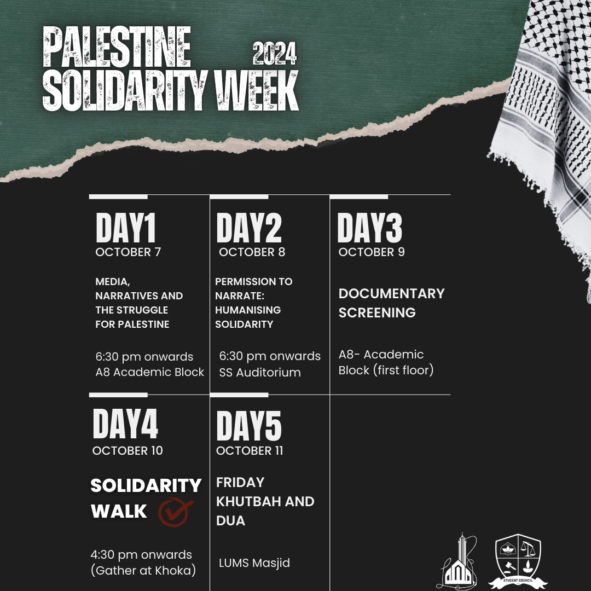
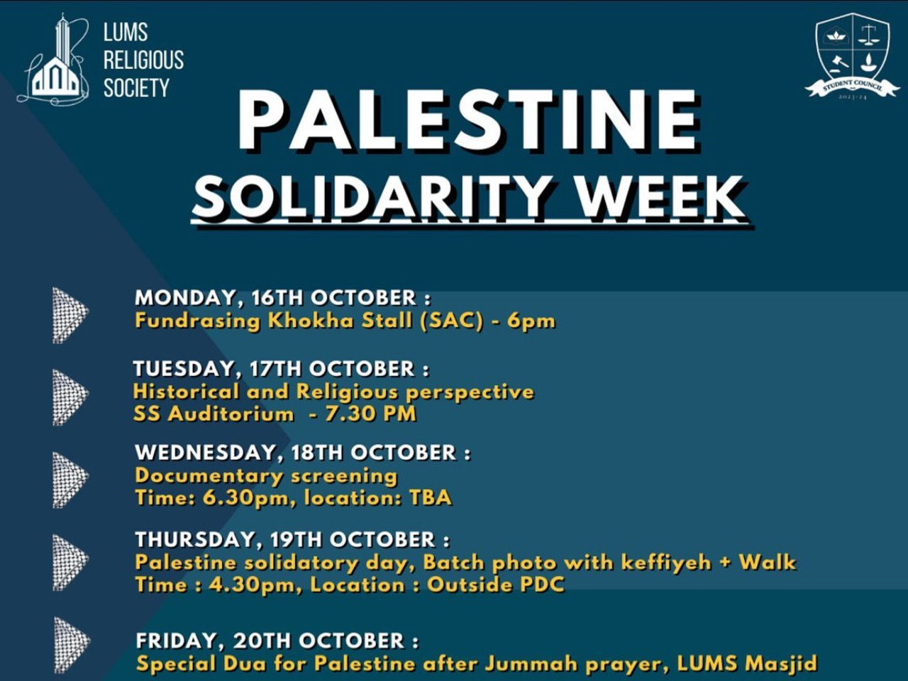

Humanitarian & Awareness Initiatives
PalestinianSolidarity
Standing together for justice, humanitarian relief, historical awareness, and collective community action.
Take action now ↗Lives.
Not statistics.
Families in Gaza face displacement, damaged infrastructure, and barriers to essential services. UNRWA’s 2026 appeal describes urgent needs across Gaza and the West Bank, including shelter, healthcare, food, and clean water.
Learning, peaceful advocacy, and supporting humanitarian relief are ways to respond.
Source: UNRWA 2026 appeal ↗
Solidarity & Action with Thiago Ávila
LRS was honoured to host Brazilian activist Thiago Ávila, a central figure in organizing the Sumud Flotilla, a civilian-led international convoy of over 40 vessels and 500 participants from 44 countries attempting to break the blockade on Gaza. The session provided a rare opportunity to hear directly from the forefront of global solidarity movements and youth mobilization.

Palestine Solidarity Day with Senator Mushtaq
Addressing the ongoing crisis and atrocities in Gaza, Senator Mushtaq Ahmad Khan addressed the LUMS community on international accountability, our collective humanitarian and moral obligations, and practical boycott avenues. The keynote was followed by a large campus-wide evening Solidarity March.

Palestine Solidarity Week (2024)
A week-long series of awareness drives, educational discussions, and fundraising avenues organized across LUMS to support humanitarian relief and preserve historical awareness.
Palestine Solidarity Campus Walk
Students, faculty, and community members gathered in unity for a peaceful solidarity walk from the LUMS Mosque to the campus In-Gate, joined by national media coverage to voice unwavering support for humanitarian justice.

Palestine Solidarity Week (2023)
The week commenced with fundraising stalls for flags and keffiyehs, followed by a talk on the historical and religious dimensions of Palestine by Ahmed Khan and Mugheera Luqman, an insightful documentary screening, an enthusiastic campus walk, and a special collective prayer session following Friday Jummah.
Palestine Insight: A Guide Beyond the News
Understand the history, ongoing realities, and actionable ways to contribute meaningfully through awareness, legitimate charities, and continuous advocacy.
Media Coverage
Video chronicles from the solidarity assemblies and awareness sessions.
Take action now
Turn solidarity
into support.
Donate to
UNRWA’s Gaza appeal.
Continue to UNRWA’s official donation page.
↗02 / Stay informedRead verified
humanitarian updates.
Follow reporting from the UN humanitarian coordination office.
↗03 / Learn togetherWhy Al Aqsa
Still Calls Us.
Explore the LRS solidarity event announcement.
↗Donations are handled by UNRWA on its website. LRS does not collect payments through this page.